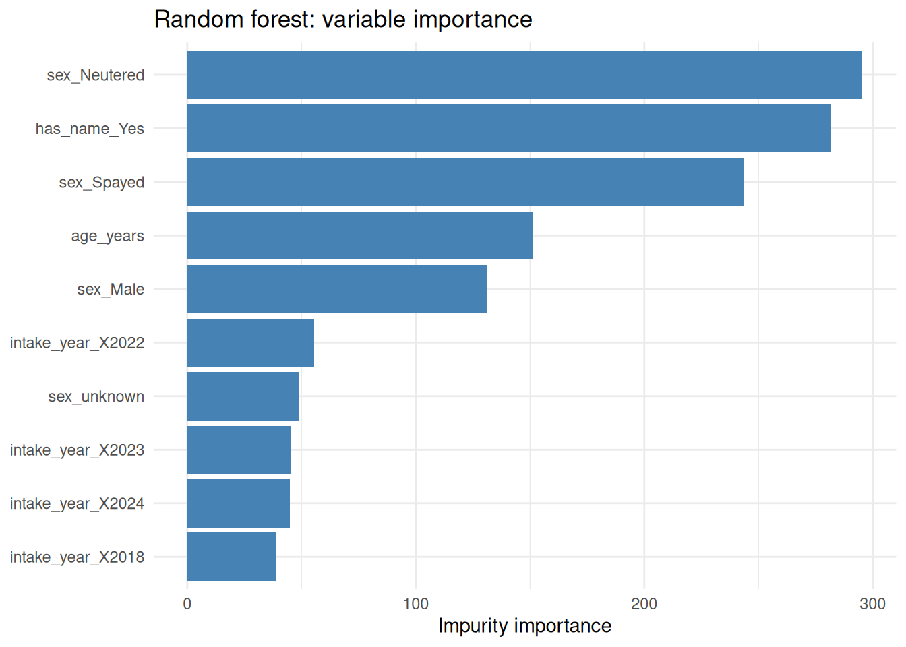
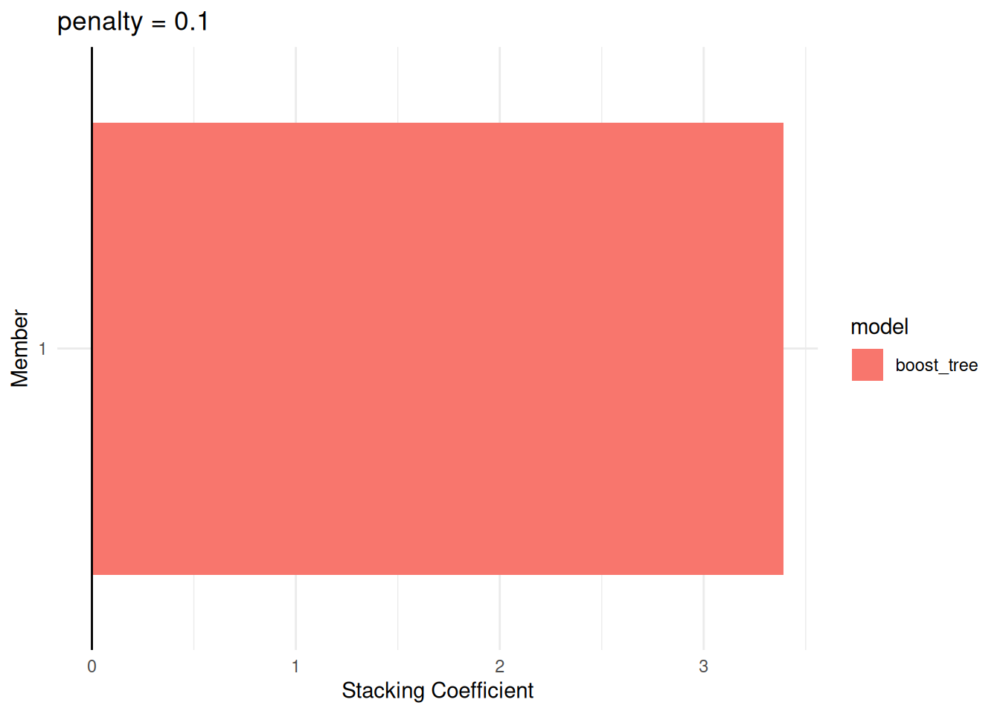

Chapter 9 Ensemble Learning
The methods covered in previous chapters each build a single predictive model: a regression equation, a tree, a neural network, and so on. An ensemble takes a different approach: it builds many models and combines their predictions. The resulting ensemble often outperforms any of its constituent learners, sometimes dramatically so.
How this chapter connects. This chapter builds directly on the supervised modelling workflow from Chapter 5 and on the single-model methods introduced earlier in prediction and classification. In the comparison table in Section 1.4.1, ensembles are not a separate problem type so much as a strategy for improving supervised performance by combining several learners.
We will use the Long Beach Animal Shelter data introduced in Lecture 10 to anchor the examples in this chapter. The modelling task is to predict whether a cat or dog will be adopted, using only information available at the time of intake.
library(tidymodels)
library(baguette)
library(mirai)
daemons(10)
tidymodels_prefer()
source("../common/longbeach.R")
longbeach <- read_csv("../data/longbeach.csv", show_col_types = FALSE)
adoption_data <- prepare_longbeach_adoption_data(longbeach)
set.seed(67)
adopt_split <- initial_split(adoption_data, prop = 0.75, strata = is_adopted)
adopt_train <- training(adopt_split)
adopt_test <- testing(adopt_split)
adopt_folds <- vfold_cv(adopt_train, v = 5, strata = is_adopted)9.1 Motivation: Why Combine Models?
9.1.1 The variance reduction argument
To see why aggregation helps, suppose we have \(B\) learners \(\hat{f}_1, \ldots, \hat{f}_B\), each with variance \(\sigma^2\) for a given test point. If the pairwise correlation between any two learners is \(\rho\), then the variance of their average is \[\begin{equation} \operatorname{Var}\!\left(\frac{1}{B}\sum_{b=1}^B \hat{f}_b(x)\right) = \rho\sigma^2 + \frac{1-\rho}{B}\,\sigma^2. \tag{9.1} \end{equation}\] The second term, \(\frac{(1-\rho)\sigma^2}{B}\), shrinks to zero as \(B\) increases, showing that averaging many learners reduces the uncertainty from any one of them. The first term, \(\rho\sigma^2\), remains no matter how large \(B\) becomes. This is the irreducible variance floor imposed by the correlation between models.
Equation (9.1) has two immediate practical lessons.
Averaging helps most when individual learners are highly variable (high \(\sigma^2\)). Trees are a classic example of such an unstable learner (see Section 4.4.6).
Averaging helps most when learners are weakly correlated (low \(\rho\)). Building diverse learners – by resampling, by restricting features, or by using entirely different model families – is therefore central to ensemble design.
9.1.2 Bias vs variance in ensembles
Recall from Section 4.2 that prediction error decomposes as MSE \(=\) Bias\(^2\) \(+\) Variance \(+\) Irreducible noise. The different ensemble strategies attack this decomposition in different ways.
Bagging averages many learners trained on bootstrap samples. It reduces variance (Equation (9.1)) but does not reduce bias, because each individual learner is still fit on a sample from the same distribution.
Boosting builds learners sequentially, with each learner targeting the errors of the previous stage. It primarily reduces bias by progressively improving the fit, at the cost of some increase in variance if too many rounds are used.
Stacking combines different model families. Since each family has different inductive biases, a well-chosen meta-learner can exploit situations where each base learner makes different errors, potentially reducing both bias and variance.
9.2 Bagging
9.2.1 The bootstrap aggregating algorithm
Bagging (Breiman, 1996) applies the bootstrap idea from validation (Section 4.4.5) to model building. The full algorithm for regression is:
- For \(b = 1, \ldots, B\):
- Draw a bootstrap sample \(\mathcal{D}^{(b)}\) of size \(n\) from the training data, sampling rows uniformly with replacement.
- Fit a learner \(\hat{f}_b\) to \(\mathcal{D}^{(b)}\).
- For a new test point \(x\), predict \[\begin{equation} \hat{f}_{\text{bag}}(x) = \frac{1}{B}\sum_{b=1}^B \hat{f}_b(x). \tag{9.2} \end{equation}\]
For classification the individual learners produce class probabilities \(\hat{p}_{bc}(x)\) for class \(c\). These are averaged across the \(B\) learners, \[\hat{p}_c(x) = \frac{1}{B}\sum_{b=1}^B \hat{p}_{bc}(x),\] and the predicted class is \(\arg\max_c \hat{p}_c(x)\).
Because each bootstrap sample is drawn independently, the \(B\) learners are not perfectly correlated, giving the variance reduction in Equation (9.1). Bias is unchanged because each individual tree is trained on a dataset that has the same distribution as the original training set.
9.2.2 Out-of-bag error
A useful property of bagging is that each observation is absent from roughly \(1/e \approx 36.8\%\) of the bootstrap samples67. The observations not included in \(\mathcal{D}^{(b)}\) are called out-of-bag (OOB) for tree \(b\). For each training observation \(i\), we can form an OOB prediction
\[\hat{f}_{\text{OOB}}(x_i) = \frac{1}{|\mathcal{B}_i|}\sum_{b \in \mathcal{B}_i} \hat{f}_b(x_i)\]
where \(\mathcal{B}_i = \{b : i \notin \mathcal{D}^{(b)}\}\) is the set of trees for which observation \(i\) was out-of-bag. The mean square error of these OOB predictions is a nearly unbiased estimate of the test error, without needing a separate validation set.
9.2.3 Implementation in R
Bagged trees are available in tidymodels via the bag_tree() function
from the baguette package.
Example 9.1 Bagged trees for the Long Beach adoption data
We fit a bagged tree model with 50 trees and compare it to a single decision tree on the same data.
adopt_recipe <- recipe(is_adopted ~ ., data = adopt_train) |>
step_novel(all_nominal_predictors()) |>
step_unknown(all_nominal_predictors()) |>
step_dummy(all_nominal_predictors())
single_tree_spec <- decision_tree(mode = "classification") |>
set_engine("rpart")
bag_spec <- bag_tree(mode = "classification") |>
set_engine("rpart", times = 50)
wf <- workflow() |> add_recipe(adopt_recipe)
single_tree_res <- wf |>
add_model(single_tree_spec) |>
fit_resamples(adopt_folds, metrics = metric_set(accuracy, roc_auc))
bag_res <- wf |>
add_model(bag_spec) |>
fit_resamples(adopt_folds, metrics = metric_set(accuracy, roc_auc))
bind_rows(
collect_metrics(single_tree_res) |> mutate(model = "single tree"),
collect_metrics(bag_res) |> mutate(model = "bagged trees")
) |>
select(model, .metric, mean)#> # A tibble: 4 × 3
#> model .metric mean
#> <chr> <chr> <dbl>
#> 1 single tree accuracy 0.81818
#> 2 single tree roc_auc 0.83150
#> 3 bagged trees accuracy 0.83425
#> 4 bagged trees roc_auc 0.87423Points to note:
step_novel()assigns unseen factor levels (in folds) to a new level, andstep_unknown()handlesNAvalues in nominal predictors, both of which are needed when working with many folds.The 5-fold cross-validation AUC provides an honest comparison between the two models without touching the test set.
The bagged version typically shows reduced variance across folds, consistent with Equation (9.1).
9.3 Random Forests
Random forests (Section 4.5) are bagged trees with one important modification: at each candidate split, only a random subset of \(m\) predictors is considered rather than all \(p\) predictors. Choosing \(m < p\) ensures that the individual trees are less correlated with each other, thereby pushing \(\rho\) in Equation (9.1) closer to zero and further improving ensemble accuracy.
A common default is \(m = \lfloor \sqrt{p} \rfloor\) for classification
and \(m = \lfloor p/3 \rfloor\) for regression, corresponding to the
mtry argument in most R implementations.
9.3.1 Variable importance
Ensembles of trees lose the legibility of a single tree, but they gain the ability to measure the importance of each predictor in a systematic way.
Impurity-based importance (also called Gini importance) sums the reduction in node impurity – measured by the Gini index (Equation (6.5)) for classification, or variance reduction for regression – attributed to splits on variable \(j\), weighted by the proportion of observations reaching each node and averaged over all \(B\) trees: \[\hat{\mathcal{I}}_j = \frac{1}{B}\sum_{b=1}^B \sum_{t:\, j_t = j} \frac{n_t}{n}\,\Delta\mathcal{G}(t)\] where \(j_t\) is the variable used at node \(t\), \(n_t\) is the number of training observations reaching node \(t\), \(n\) is the total training size, and \(\Delta\mathcal{G}(t)\) is the impurity reduction at node \(t\).
Permutation importance provides a more direct measure of predictive contribution. For each tree \(b\) and each variable \(j\): 1. Compute the OOB error for tree \(b\) on the unperturbed OOB data. 2. Randomly permute the values of variable \(j\) in the OOB data and recompute the OOB error. 3. The importance of \(j\) is the average increase in error caused by the permutation.
A large permutation importance value indicates that the variable carries genuine predictive information; permuting it hurts performance. A near-zero value suggests the variable is irrelevant.
Example 9.2 Random forest and variable importance for the Long Beach adoption data
library(ranger)
rf_spec <- rand_forest(mode = "classification", trees = 500,
mtry = tune()) |>
set_engine("ranger", importance = "impurity")
rf_wf <- wf |> add_model(rf_spec)
# Tune mtry over a small grid
rf_grid <- tibble(mtry = c(2L, 4L, 6L))
rf_tune <- tune_grid(rf_wf, resamples = adopt_folds,
grid = rf_grid,
metrics = metric_set(roc_auc))
show_best(rf_tune, metric = "roc_auc")#> # A tibble: 3 × 7
#> mtry .metric .estimator mean n std_err .config
#> <int> <chr> <chr> <dbl> <int> <dbl> <chr>
#> 1 6 roc_auc binary 0.87405 5 0.0023920 pre0_mod3_post0
#> 2 4 roc_auc binary 0.86500 5 0.0025043 pre0_mod2_post0
#> 3 2 roc_auc binary 0.84820 5 0.0025612 pre0_mod1_post0# Fit best model on full training set and inspect importance
best_mtry <- select_best(rf_tune, metric = "roc_auc")
final_rf <- finalize_workflow(rf_wf, best_mtry) |> fit(adopt_train)
final_rf |>
extract_fit_engine() |>
(\(m) tibble(variable = names(m$variable.importance),
importance = m$variable.importance))() |>
arrange(desc(importance)) |>
slice_head(n = 10) |>
ggplot(aes(x = reorder(variable, importance), y = importance)) +
geom_col(fill = "steelblue") +
coord_flip() +
labs(x = NULL, y = "Impurity importance", title = "Random forest: variable importance")
The plot shows which intake-time features drive the adoption prediction. Variables near the top account for the largest total impurity reduction across the 500 trees.
9.4 Boosting
9.4.1 Forward stagewise additive modelling
Boosting belongs to a class of methods known as forward stagewise additive modelling. The goal is to construct an additive expansion
\[\begin{equation} F_M(x) = \sum_{m=1}^M \beta_m f_m(x) \tag{9.3} \end{equation}\]
where each \(f_m\) is a weak learner (typically a shallow tree) and \(\beta_m > 0\) is its contribution weight. We want to minimise a loss function
\[\sum_{i=1}^n L\bigl(y_i,\, F_M(x_i)\bigr)\]
over the choices of \(\beta_m\) and \(f_m\). Minimising this jointly over all \(M\) terms simultaneously is computationally intractable. The forward stagewise approach instead adds one term at a time, keeping all previous terms fixed:
At step \(m\), with \(F_{m-1}\) already constructed, we find \[(\beta_m, f_m) = \arg\min_{\beta, f} \sum_{i=1}^n L\bigl(y_i,\, F_{m-1}(x_i) + \beta f(x_i)\bigr).\]
When the loss is squared error, \(L(y, \hat y) = \tfrac{1}{2}(y - \hat y)^2\), the optimal next step is simply to fit \(f_m\) to the residuals \(r_i = y_i - F_{m-1}(x_i)\). For other loss functions the residuals are replaced by pseudo-residuals.
9.4.2 Gradient boosting
Gradient boosting (Friedman, 2001) generalises the forward stagewise approach to any differentiable loss \(L\) by interpreting each new step as a gradient descent move in function space.
Define the pseudo-residuals at step \(m\) as the negative gradient of the loss with respect to the current predictions: \[\begin{equation} r_i^{(m)} = - \left[\frac{\partial L(y_i,\, F(x_i))}{\partial F(x_i)}\right]_{F = F_{m-1}}. \tag{9.4} \end{equation}\]
The algorithm is then:
Initialise \(F_0(x) = \arg\min_c \sum_i L(y_i, c)\) (e.g. the mean response for squared error, or the log-odds of the majority class for log-loss).
For \(m = 1, \ldots, M\):
- Compute pseudo-residuals \(r_i^{(m)}\) from Equation (9.4).
- Fit a weak learner \(h_m\) to the pairs \(\{(x_i, r_i^{(m)})\}_{i=1}^n\).
- Update \[\begin{equation} F_m(x) = F_{m-1}(x) + \eta\, h_m(x) \tag{9.5} \end{equation}\] where \(\eta \in (0, 1]\) is the learning rate (shrinkage parameter).
The key connection is that the pseudo-residuals \(r_i^{(m)}\) are the negative gradient of the total loss with respect to the current functional predictions \(F_{m-1}(x_i)\). Fitting \(h_m\) to these residuals therefore moves the ensemble prediction in the steepest descent direction of the loss functional.
For squared error loss: \(L(y, \hat y) = \tfrac{1}{2}(y-\hat y)^2\), so \(r_i^{(m)} = y_i - F_{m-1}(x_i)\); the pseudo-residuals are the ordinary residuals.
For log-loss (binary classification): Writing \(p(x) = \operatorname{sigmoid}(F(x))\) and \(L(y, F) = -y\log p - (1-y)\log(1-p)\), the pseudo-residuals simplify to \(r_i^{(m)} = y_i - p_{m-1}(x_i)\). In both cases the pseudo-residuals have the same interpretation: the part of the target that the current model has not yet explained.
The learning rate \(\eta\) controls how aggressively each new tree moves the ensemble prediction. A small \(\eta\) requires more trees \(M\) to achieve the same fit, but the combined effect of many small steps can be more accurate and more robust to overfitting than a few large ones.
9.4.3 XGBoost: regularised gradient boosting
XGBoost (Chen and Guestrin, 2016) extends gradient boosting with a regularised objective function and an efficient implementation.
At round \(m\), after a second-order Taylor expansion of the loss around \(F_{m-1}(x_i)\), the objective for the new tree \(f_m\) becomes \[\begin{equation} \tilde{\mathcal{L}}^{(m)} = \sum_{i=1}^n \Bigl[ g_i\, w_{q(x_i)} + \tfrac{1}{2}(h_i + \lambda)\, w_{q(x_i)}^2 \Bigr] + \gamma T \tag{9.6} \end{equation}\] where
- \(g_i = \partial_{F} L(y_i, F(x_i))\big|_{F_{m-1}}\) and \(h_i = \partial^2_{F} L(y_i, F(x_i))\big|_{F_{m-1}}\) are the first and second derivatives of the loss for observation \(i\);
- \(q : \mathbb{R}^p \to \{1, \ldots, T\}\) maps each observation to its leaf index in the current tree;
- \(w_t\) is the score (weight) assigned to leaf \(t\);
- \(T\) is the number of leaves;
- \(\lambda \geq 0\) is an L2 regularisation penalty on leaf weights;
- \(\gamma \geq 0\) is a penalty on tree complexity (number of leaves).
For a fixed tree structure, the objective (9.6) is quadratic in the leaf weights. Minimising over \(w_t\) for each leaf \(t\) gives the optimal leaf weight \[\begin{equation} w_t^* = -\frac{G_t}{H_t + \lambda}, \qquad G_t = \sum_{i \in \text{leaf}\,t} g_i, \quad H_t = \sum_{i \in \text{leaf}\,t} h_i. \tag{9.7} \end{equation}\] Substituting back yields the gain from adding a split at node \(t\), which XGBoost uses to select the best split at each node in place of the usual impurity criteria.
The practical implication of \(\lambda\) and \(\gamma\) is that they shrink and prune the trees, acting as a form of regularisation that reduces overfitting. In combination with the learning rate \(\eta\), row and column subsampling, and tree depth limits, XGBoost provides many axes for controlling the bias-variance trade-off.
Key hyperparameters and their interpretation:
tidymodels argument |
Symbol | Effect |
|---|---|---|
trees |
\(M\) | Number of boosting rounds; more is not always better |
tree_depth |
max depth | Deeper trees capture interactions but overfit more easily |
learn_rate |
\(\eta\) | Shrinks each tree’s contribution; smaller requires more trees |
mtry |
subsample cols | Fraction of columns used per tree; adds diversity |
sample_size |
subsample rows | Fraction of rows used per tree; reduces overfitting |
min_n |
min child wt | Minimum \(H_t\) in a leaf; controls minimum leaf size |
loss_reduction |
\(\gamma\) | Minimum gain required to make a split |
9.4.4 Implementation in R
Example 9.3 Gradient boosting for the Long Beach adoption data
We compare a default boosted tree with a tuned XGBoost model. The
bonsai package is required to use the lightgbm engine; here we use
the more portable xgboost engine.
library(xgboost)
boost_spec <- boost_tree(
mode = "classification",
trees = tune(),
tree_depth = tune(),
learn_rate = tune()
) |>
set_engine("xgboost")
boost_wf <- wf |> add_model(boost_spec)
# A small grid covering key hyperparameters
boost_grid <- grid_regular(
trees(range = c(50L, 300L)),
tree_depth(range = c(2L, 5L)),
learn_rate(range = c(-2, -0.5), trans = log10_trans()),
levels = 3
)
boost_tune <- tune_grid(
boost_wf, resamples = adopt_folds,
grid = boost_grid,
metrics = metric_set(roc_auc)
)
show_best(boost_tune, metric = "roc_auc", n = 5)#> # A tibble: 5 × 9
#> trees tree_depth learn_rate .metric .estimator mean n std_err .config
#> <int> <int> <dbl> <chr> <chr> <dbl> <int> <dbl> <chr>
#> 1 300 3 0.31623 roc_auc binary 0.88729 5 0.0022825 pre0_m…
#> 2 300 5 0.056234 roc_auc binary 0.88695 5 0.0014439 pre0_m…
#> 3 175 5 0.31623 roc_auc binary 0.88678 5 0.0023902 pre0_m…
#> 4 50 5 0.31623 roc_auc binary 0.88662 5 0.0016082 pre0_m…
#> 5 175 3 0.31623 roc_auc binary 0.88608 5 0.0021445 pre0_m…best_boost <- select_best(boost_tune, metric = "roc_auc")
final_boost <- finalize_workflow(boost_wf, best_boost) |>
last_fit(adopt_split, metrics = metric_set(accuracy, roc_auc))
collect_metrics(final_boost)#> # A tibble: 2 × 4
#> .metric .estimator .estimate .config
#> <chr> <chr> <dbl> <chr>
#> 1 accuracy binary 0.83536 pre0_mod0_post0
#> 2 roc_auc binary 0.88667 pre0_mod0_post0Points to note:
grid_regular()produces a factorial grid over the three hyperparameters. In practice,grid_latin_hypercube()or Bayesian optimisation viatune_bayes()are more efficient for larger grids.last_fit()refits the finalised workflow on the full training set and evaluates on the held-out test set in a single call, respecting the original split. This is the correct way to report test performance.
9.5 Stacking
9.5.1 Stacked generalisation
Stacking (Wolpert, 1992) – also called blending or stacked generalisation – combines predictions from \(K\) diverse base learners using a meta-learner. The key insight is that different model families typically make different errors, and a meta-learner trained on their predictions can allocate weight to the model that is most reliable for each region of the feature space.
The naïve approach – train base learners on the full training set, generate their predictions on the same training set, and train a meta-learner on these predictions – is flawed. The base learners will have overfit to the training data, so their training-set predictions will be unfairly optimistic, leading the meta-learner to over-weight complex models.
9.5.2 Cross-validated meta-features
The remedy is to use cross-validated predictions as meta-features. With \(V\)-fold cross-validation:
Partition the training data \(\mathcal{D}_{\text{train}}\) into \(V\) folds \(\mathcal{D}_1, \ldots, \mathcal{D}_V\).
For each fold \(v = 1, \ldots, V\) and each base learner \(k = 1, \ldots, K\):
- Train learner \(k\) on \(\mathcal{D}_{\text{train}} \setminus \mathcal{D}_v\).
- Predict fold \(v\): \(\hat{z}_{ik} = \hat{f}_k(x_i)\) for \(i \in \mathcal{D}_v\).
Collect the out-of-fold predictions into a meta-feature matrix \(\hat{\mathbf{Z}} \in \mathbb{R}^{n \times K}\) with rows \((\hat{z}_{i1}, \ldots, \hat{z}_{iK})\).
Train a meta-learner \(g\) on \(\{(\hat{\mathbf{z}}_i, y_i)\}_{i=1}^n\).
To predict a new observation \(x^*\):
- Refit each base learner on the entire training set.
- Compute base predictions \(\hat{z}_k^* = \hat{f}_k(x^*)\).
- Output \(g(\hat{z}_1^*, \ldots, \hat{z}_K^*)\).
The meta-learner \(g\) is often a regularised linear model (ridge or lasso regression for regression tasks, logistic regression for classification). Using out-of-fold predictions ensures that the meta-learner sees predictions that were computed on held-out data, removing the bias that would otherwise favour complex base learners.
9.5.3 Implementation in R
The stacks package implements cross-validated stacking within the
tidymodels framework. Base learners are added to a model stack, which
then blend their candidate predictions into a final ensemble.
Example 9.4 A stacked ensemble for the Long Beach adoption data
We assemble a stack from three base learners: a logistic regression, a random forest, and a boosted tree.
library(stacks)
ctrl <- control_stack_resamples()
# Logistic regression candidate
lr_spec <- logistic_reg(penalty = tune(), mixture = 1) |>
set_engine("glmnet")
lr_res <- wf |>
add_model(lr_spec) |>
tune_grid(resamples = adopt_folds,
grid = 5,
metrics = metric_set(roc_auc),
control = ctrl)
# Random forest candidate (fewer trees for speed)
rf_fast_spec <- rand_forest(mode = "classification", trees = 200,
mtry = tune()) |>
set_engine("ranger")
rf_fast_res <- wf |>
add_model(rf_fast_spec) |>
tune_grid(resamples = adopt_folds,
grid = tibble(mtry = c(2L, 4L)),
metrics = metric_set(roc_auc),
control = ctrl)
# Boosted tree candidate
bt_spec <- boost_tree(mode = "classification",
trees = 200, learn_rate = 0.05,
tree_depth = tune()) |>
set_engine("xgboost")
bt_res <- wf |>
add_model(bt_spec) |>
tune_grid(resamples = adopt_folds,
grid = tibble(tree_depth = c(2L, 4L)),
metrics = metric_set(roc_auc),
control = ctrl)
# Build and blend
adopt_stack <- stacks() |>
add_candidates(lr_res) |>
add_candidates(rf_fast_res) |>
add_candidates(bt_res) |>
blend_predictions(penalty = 10^(-2:-1))
autoplot(adopt_stack, type = "weights")
adopt_ensemble <- adopt_stack |> fit_members()
adopt_test_pred <- adopt_ensemble |>
predict(new_data = adopt_test) |>
bind_cols(predict(adopt_ensemble, adopt_test, type = "prob")) |>
bind_cols(adopt_test |> select(is_adopted))
adopt_test_pred |> roc_auc(truth = is_adopted, .pred_Adopted)#> # A tibble: 1 × 3
#> .metric .estimator .estimate
#> <chr> <chr> <dbl>
#> 1 roc_auc binary 0.11546Points to note:
control_stack_resamples()instructs each tuning call to save the out-of-fold predictions needed bystacks.blend_predictions()fits a non-negative lasso regression on the stacked predictions. Thepenaltyargument controls how many base model candidates receive non-zero weight.autoplot(type = "weights")shows the blending coefficients, making it easy to see which model families contribute most to the stack.fit_members()refits only the selected base learners on the full training set before deploying.
9.6 AutoML: Automated Model Selection
AutoML systems automate the search over model families, preprocessing
steps, and hyperparameters. Tools such as H2O AutoML, FLAML, AutoGluon,
and the tidymodels extension agua fit dozens of candidates in a
structured search and produce a leaderboard ordered by a chosen metric.
The appeal is clear: AutoML can surface competitive baselines quickly, comparing methods that might otherwise require many separate modelling pipelines. In competitions and initial exploration it is a useful starting point.
However, AutoML carries important risks that are easy to overlook:
Data leakage. AutoML systems preprocess and transform data internally. If preprocessing uses information from left-out validation folds (e.g. target-encoding fitted on the whole dataset), the leaderboard scores will be optimistic.
Opaque pipelines. The best AutoML model may involve a transformation, an imputation strategy, or a feature interaction that is never surfaced to the analyst.
Interpretability loss. An ensemble of stacked and blended models may achieve a fraction of a percent better AUC but be impossible to explain to a stakeholder or to audit for fairness.
Deployment complexity. A full AutoML pipeline may depend on many libraries and have complex serialisation requirements.
AutoML is most useful as an initial benchmark to understand what performance is achievable on the task, after which a simpler, more interpretable model can be justified if it comes close to matching the benchmark.
9.7 Summary
Ensemble methods improve predictive performance by combining multiple learners.
Bagging reduces variance by averaging many bootstrap-trained learners. The variance of the ensemble is \(\rho\sigma^2 + (1-\rho)\sigma^2/B\), so decorrelating the learners is as important as increasing \(B\).
Random forests add random feature subsets to bagging, further decorrelating the trees and enabling reliable variable importance measures.
Gradient boosting reduces bias sequentially by fitting each new weak learner to the pseudo-residuals (negative gradient of the loss) of the current ensemble.
XGBoost extends gradient boosting with a regularised second-order objective, enabling efficient split search and protecting against overfitting via leaf-weight shrinkage.
Stacking combines diverse model families using a meta-learner trained on cross-validated out-of-fold predictions, avoiding the bias that would result from using training-set predictions directly.
AutoML automates the above choices but does not replace careful thinking about leakage, interpretability, and deployment.
Looking ahead, the same workflow ideas from Chapter 5 can be used to compare these ensembles against simpler baselines, helping us decide when the extra complexity is genuinely worthwhile.
For a sample of size \(n\), the probability that a given observation is excluded from a bootstrap sample is \((1 - 1/n)^n \to e^{-1} \approx 0.368\) as \(n \to \infty\).↩︎